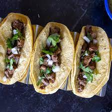

These delicious street tacos are cooked quickly on the Blackstone Griddle and then served with the classin oinion and cilantro for a legit street taco right in your own backyard!
- 4 pounds beef skirt steak
- 2 limes, juiced
- 1 teaspoon salt
- 1/2 teaspoon pepper
- 1/2 teaspoon garlic powder
- 1 tablespoon of your favorite Mexican rub
- corn tortillas
- 1 small white onion, chopped
- 1 bunch of cilantro, chopped
- Take the steak and evenly distribute all the salt, pepper, garlic powder, and rub. Let it sit in the fridge uncoverd and seasoned for about an hour
- While the steak is waiting, chop all your veggies
- Preheat your Blackstone Griddle over medium heat for 10-15 minutes
- Lay down a think layer of oil and warm all of your tortillas on both sides on the griddle. Wrap tightly in foil so they stay warm
- Cut the steak across the grain into thin strips, then cut across all the strips to dice the uncooked steak into bite-sized pieces
- Lay down a little more oil and throw the steak down in a thin layer on the hot griddle
- Let the steak sizzle and cook for a couple of minutes until it starts to get a light crisp on the bottom
- Flip all gthe steak using a large spatula onto the other side and stir it up a bit. Squeeze your lime juice ont the steak and stir it around, then remove it promptly from the griddle
- Serve in your hot tortillas with your garnish (cilantro and onion) and enjoy!